# 图像分割
# 预备知识
图像分割的定义：
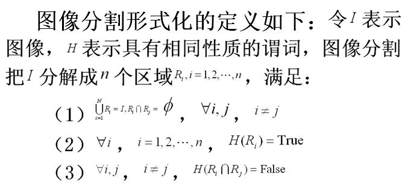
- 在对图像的研究和应用中，人们往往仅对图像中的某些部分感兴趣，这些部分一般称为目标或前景
- 为了辨识和分析目标，需要将有关区域分离并提取出来，在此基础上对目标进一步利用，如进行特征提取、测量或识别
- 图像分割就是指把图像分成各具同一特性的区域并提取出感兴趣目标的技术和过程
- 特性可以是灰度、颜色、纹理等，目标可以对应单个区域，也可以对应多个区域
- 图像分割算法是基于图像特性的不连续性和相似性
- 不连续性是基于图像特性的不连续变化分割图像，如 图像的边缘
- 根据图像特性的规则将图像分割为相似的区域，如阈值处理、区域生长、区域分离和聚合
图像分割是指根据灰度、彩色、空间纹理、几何形状等特征把图像划分成若干个互不相交的区域，使得这些特征在同一区域内表现出一致性或相似性，而在不同区域间表现出明显的不同。
简单的说就是在一副图像中，把目标从背景中分离出来。对于灰度图像来说，区域内部的像素一般具有灰度相似性，而在区域的边界上一般具有灰度不连续性
三大类方法：
- 根据区域间灰度不连续搜寻区域之间的边界，在奇异性检测、边缘连接和边界检测介绍
- 以像素性质的分布进行阈值处理，在阈值处理介绍
- 直接搜寻区域进行分割，在基于区域的分割中介绍
# 奇异性检测
图像的奇异性指的是图像局部信息的光滑程度，一般情况下绝大多数图像区域是平滑的，少数不平滑。由于图像是二维的，不平滑的信息有孤立点、线和边缘
# 点检测
使用模板，与图像进行卷积，若模板计算值R大于阈值T，则检测到一个点。
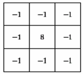基本思想：如果一个孤立点与它周围的点不同，则可以使用上述模板进行检测。
注意：如果模板响应为0，则表示在灰度级为常数的区域
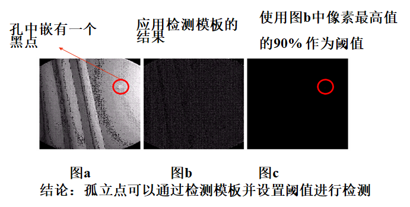连续小波变换可以精确检测奇异性，单靠模板无法做教精确检测。
# 线检测
与点检测类似，不过使用专门的线检测模板。
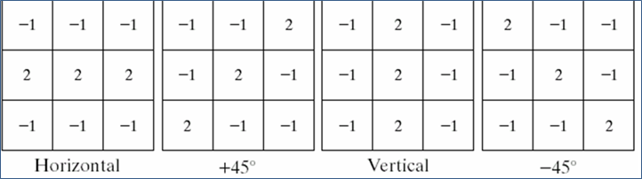- 第一个模板对水平线有最大响应
- 第二模板对45°方向线有最大响应
- 第三模板对垂直线有最大响应
- 第四模板对-45°方向线有最大响应
小角度线检测模板如何设计，如15°
# 边缘检测
边缘检测是基于灰度突变来分割图像的常用方法。
# 图像梯度及其性质
为了在一幅图像的位置处寻找边缘的强度和方向，所选择的工具就是梯度，梯度用来表示，并用向量来定义：

这个梯度向量在点处的幅度由其欧几里得向量范数得到：

它是点处的方向变化率的值。
梯度向量在点处的方向由下式给出：
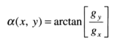
角度是相对于轴逆时针方向度量的。
注意，都是与原图像大小相同的矩阵。一般通常称为梯度图像，是方向图像。
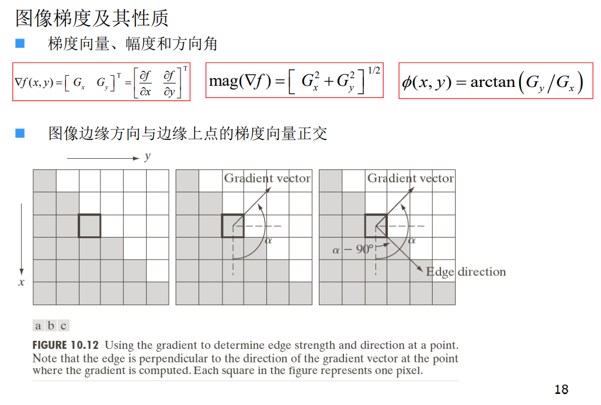案例（梯度性质）
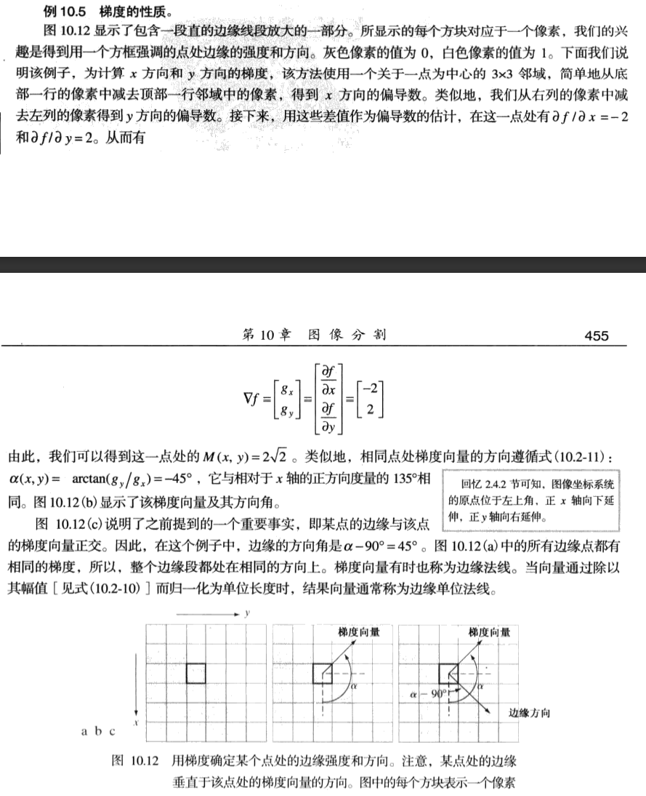梯度向量有时候也称为边缘发线，因为它与边缘方向是正交的。
# 边缘模型
边缘模型根据它们的灰度剖面来分类。有台阶边缘、斜坡边缘和 “屋顶”边缘。
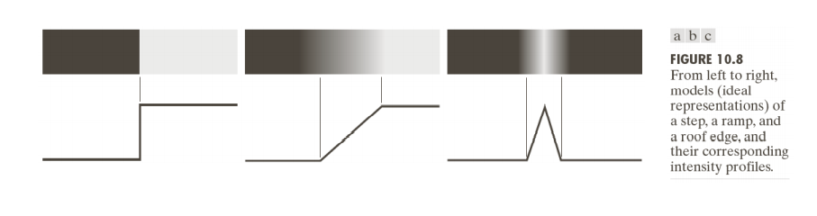一阶导数的幅度可用于检测图像中的某个点处是否存在一个边缘。
二阶导数的符号用于确定一个边缘像素是位于该边缘的暗侧还是位于该边缘的亮侧。
围绕一条边缘的二阶导数的两个附加性质：
- 对图像中的每条边缘，二阶导数生成两个值（一个不希望的特点）
- 二阶导数的零交叉点可用于定位粗边缘的中心
微弱的可见噪声严重影响检测边缘所用的两个关键导数。
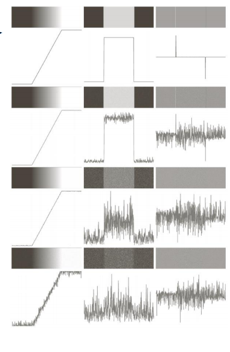因为噪声是变化尖锐的地方，求导之后其导数的绝对值很突兀。
因此执行边缘检测的三个基本步骤是：
- 为降噪图像进行平滑处理
- 边缘点的检测。这是一个局部操作，从一幅图像中提取所有边缘点的潜在候选者
- 边缘定位。这一步的目的是从候选边缘点中选择组成边缘点集合的真实成员
# 基本边缘检测算子
# Roberts交叉算子
Robert是利用局部差分算子寻找边缘算子。其卷积核分别为：

采用1范数衡量梯度的幅度
作用：对于具有陡峭的低噪声的图像效果较高。
# Sobel算子
Sobel算子，采用中心对称的核，并考试中心点对侧数据的性质，并带有关于边缘方向的更多信息。其卷积核分别为

采用范数衡量梯度的幅度|G(x,y)|≈max(|G_x|,|G_y|)
作用：对于灰度渐变和噪声较多的图像处理较好。
其中心位置使用2权重，通过强调中心位置来对图像进行平滑。
# Prewitt算子
Prewitt算子和Sobel算子类似，不同之处仅在其中心位置使用1权重。其卷积核分别为：
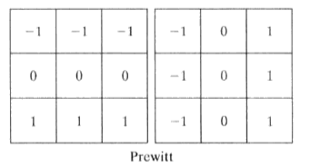
作用：对于灰度渐变和噪声较多的图像处理较好。
# Canny算子（重点）
Canny算子的梯度是用高斯滤波器的导数计算的，检测边缘的方法是寻找图像梯度的局部极大值。
算法步骤：
用高斯滤波器平滑图像；
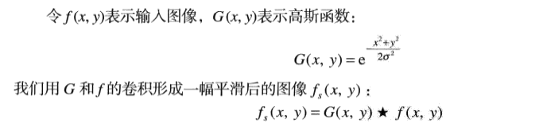
计算滤波后图像梯度的幅值和方向；
使用上方介绍的任意一个梯度算子，来计算梯度幅度和方向。

对梯度幅值应用非极大值抑制。其过程为找出图像梯度中的局部极大值点，把其他非局部极大值点置零以得到细化的边缘；
PPT介绍：
非极大值抑制：沿幅角方向检测模值的极大值点，即边缘点，遍历8个方向图像像素，把每个像素偏导值与相邻像素的模值比较，取其MAX值为边缘点，置像素灰度值为0。
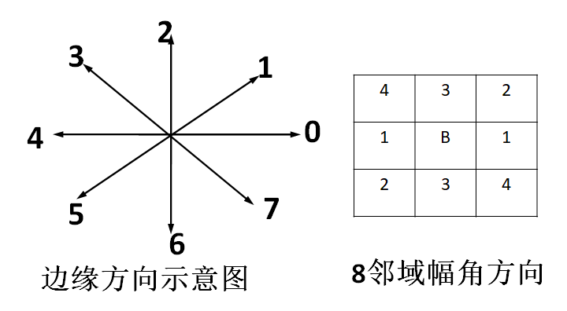
课本介绍：
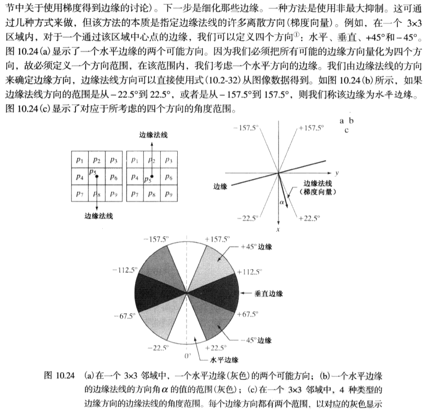 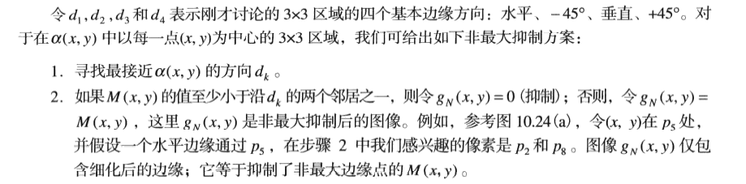双阈值算法检测和连续边缘。使用两个阈值T1和T2（T1>T2），T1用来找到每条线段，T2用来在这些线段的两个方向上延伸寻找边缘的断裂处，并连接这些边缘。其中T1代表大于该值的肯定是边缘，T2表示小于该值的肯定不是边缘。
双阈值检测：由于单阈值处理时，合适的阈值选择较困难，常常需要采用反复试验，因此采用双阈值检测算法。
- 对经过非极大值抑制后的图像作用两个阈值th1，th2，th1=0.4th2,两个阈值作用后得到两个图像1、2。
- 较大阈值检测出的图像2去除了大部分噪声，但是也损失了有用的边缘信息。
- 较小阈值检测得到的图像1则保留着较多的边缘信息，以此为基础，补充图像2中的丢失的信息，连接图像边缘。
连接边缘：
- 对图像2进行扫描，当遇到一个非零灰度的像素时，跟踪以为开始点的轮廓线，直到轮廓线的终点。
- 考察图像1中与图像2中的点位置对应的点的8邻近区域。如果在中的8邻近区域中有非零像素存在，则将其包括到图像2中，作为点。从开始，重复第一步，直到我们图像1和图像2中都无法继续为止。
- 当完成对包括的轮廓线的连结之后，将这条轮廓线标记为已经访问。回到第一步，寻找下一条轮廓线。重复第一步，第二，第三步，直到图像2中找不到新轮廓线为止。
即图像2在图像1中生长。
坎尼边缘检测算法的步骤小结如下：
- 使用高斯滤波器平滑图像
- 利用微分算子，计算梯度幅值和方向图像
- 对梯度幅值图像进行非极大值抑制
- 用双阈值处理和连通性分析来检测与连接边缘。
# 拉普拉斯算子
拉普拉斯（Laplace）算子是离散二维二阶导数的最简单形式。
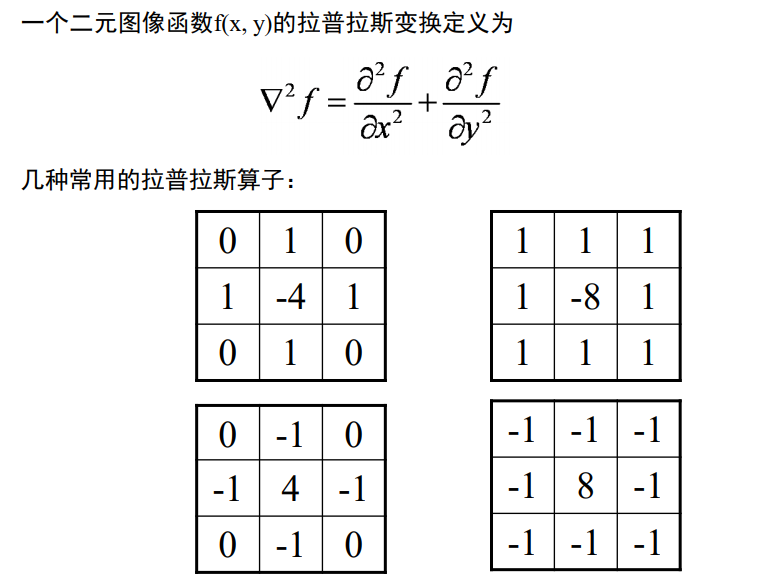# 拉普拉斯-高斯算子
基本思想：由于拉普拉斯算子对于噪声比较敏感，因此采用先用高斯函数对图像滤波，然后对滤波后的图像进行拉普拉斯运算，算得的值等于零的点认为是边界点。
过程：
- 用一个2-D的高斯平滑模板与源图象卷积
- 计算卷积后图象的拉普拉斯值
- 检测拉普拉斯图象中的过零点作为边缘点
# 各种边缘检测算子比较
Roberts算子：利用局部差分算子寻找边缘，边缘定位精度较高，但容易丢失一部分边缘，同时由于图像没经过平滑处理，因此不具备抑制噪声能力。
该算子用于具有陡峭边缘且噪声低的图像效果较好。
Sobel算子和Prewitt算子：都是对图像先作加权平滑处理，然后再作微分运算，所不同的是平滑部分的权值有些差异，因此对噪声具有一定的抑制能力，但不能完全排除检测结果中出现的虚假边缘。
虽然这两个算子边缘定位效果不错，但检测出的边缘容易出现多像素宽度。
Laplacian算子：是不依赖于边缘方向的二阶微分算子，对图像中的阶跃型边缘点定位准确，该算子对噪声非常敏感，它使噪声成分得到加强，这两个特性使得该算子容易丢失一部分边缘的方向信息，造成一些不连续的检测边缘，同时抗噪声能力比较差。
LOG算子：该算子克服了Laplacian算子抗噪声能力比较差的缺点，但在抑制噪声的同时也可能将原有的比较尖锐的边缘也平滑掉了，造成这些尖锐边缘无法被检测到。
# 边缘连接和边界检测
理想情况下，边缘检测应该仅产生位于边缘上的像素集合。实际上，由于噪声、不均匀照明引起的边缘间断，以及其他引入灰度值虚假的不连续的影响，这些像素并不能完全描述边缘特性。
因此，一般是在边缘检测后紧跟连接算法，将边缘像素组合成有意义的边缘或区域边界。
三种基本的边缘连接方法：
- 第一种方法需要有关局部区域中的边缘点（如一个3×3邻域）的知识；
- 第二种方法要求区域边界上的点已知；
- 第三种方法是处理整个边缘图像的全局方法。
# 局部处理
在每个点 (𝑥, 𝑦) 处的一个小邻域内分析像素的特点，根据预定的准则， 将所有的相似点连接起来，以形成根据指定准则满足相同特性像素的 一条边缘。
步骤：
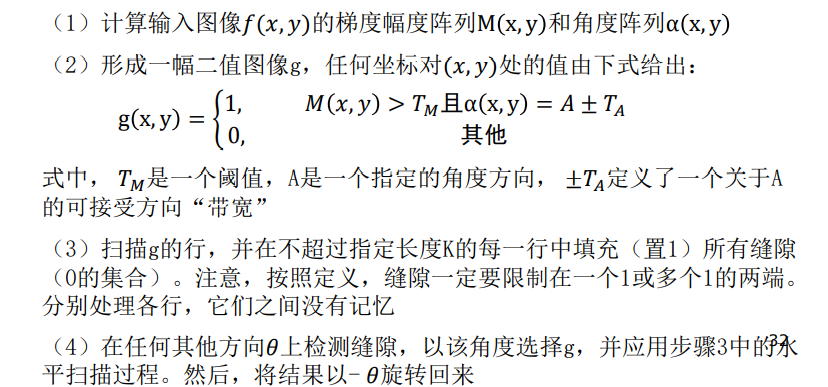
# 区域处理
对这类处理的一种方法是函数近似，我们对已知点拟合一条二维曲线。我们的兴趣通常在于快速执行的技术，多边形近似尤其有吸引力
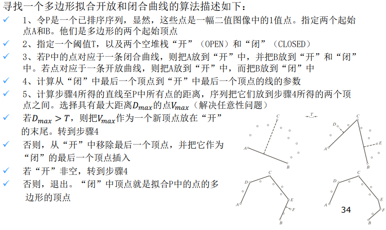 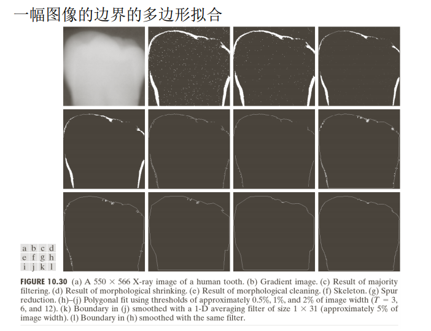 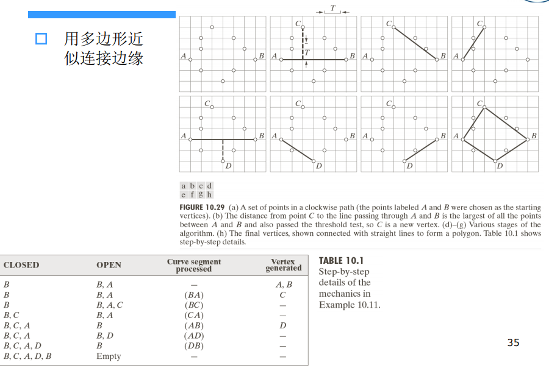
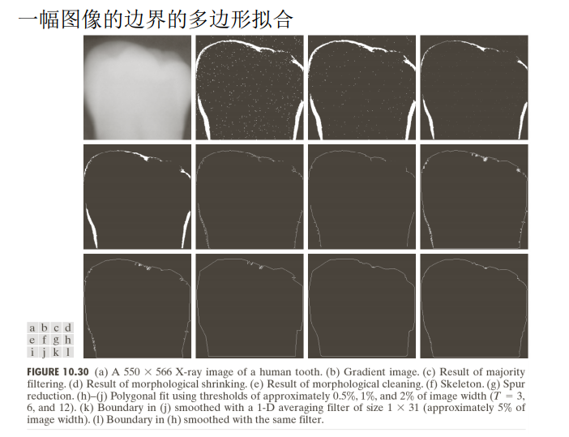 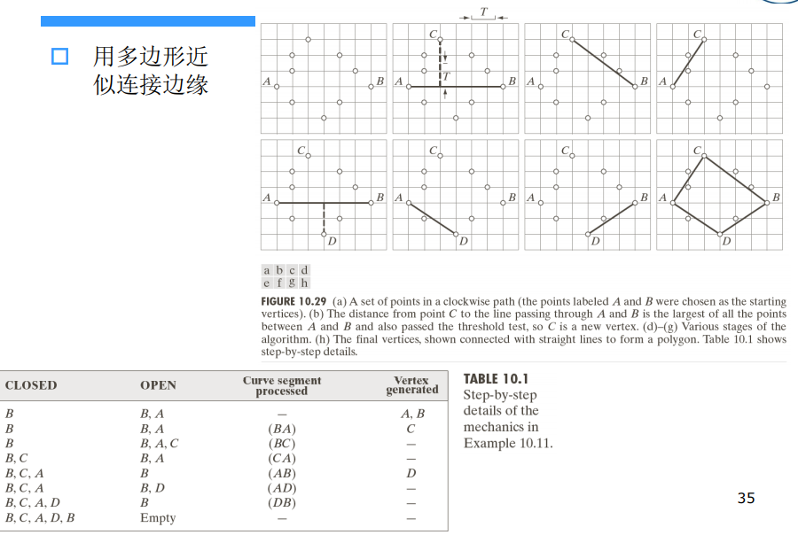 # 整体处理（霍夫变换）
检测像素是否位于指定形状的曲线上。一旦检测到，这些曲线就会形 成边缘或感兴趣的区域边界。
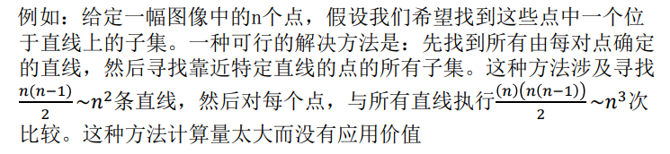
霍夫变换是一种替代方法：从图像的xy平面到参数空间。
基本思想：
对于边界上的n个点的点集，找出共线的点集和直线方程
对于任意两点的直线方程：，构造一个参数的平面，从而有如下结论：
xy平面上的任意一条直线，对应在参数平面上都有一个点
过xy平面一个点的所有直线，构成参数ab平面上的一条直线
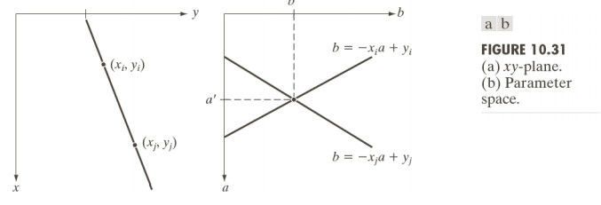
如果点与点共线，那么这两点在参数ab平面上的直线将有一个交点。
在参数ab平面上相交直线最多的点，对应的xy平面上的直线就是我们的解
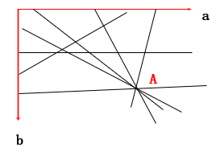
当直线逼近垂直方向时，a（直线的斜率）会趋于无限大。
解决该问题的方法之一是，使用一条直线的极坐标表示：xcosθ + ysinθ = ρ
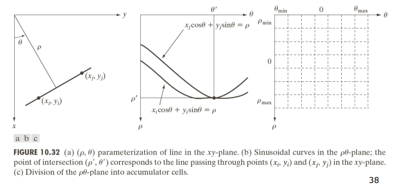
实现流程：
由于垂直直线的斜率无穷大，则改用极坐标形式。
参数平面为q,r，对应不是直线而是正弦曲线
使用交点累加器，或交点统计直方图，找出相交线段最多的参数空间的点
然后找出该点对应的xy平面的直线线段
# 阈值处理
由于阈值处理直观、实现简单且计算速度快，因此图像阈值处理在图像分割应用中处于核心地位。
# 基础
灰度阈值处理基础：
左图中的灰度直方图对应于图像𝑓(𝑥, 𝑦)，该图像由暗色背景上的较亮物体组成。
从背景中提取物体的一种明显办法是选择一个将这些模式分开的阈值T；然后, 𝑓 (𝑥, 𝑦)> 𝑇的任何点 𝑥, 𝑦 称为一个对象点；否则该点称为背景点。
换句话说，分割后图像𝑔(𝑥, 𝑦)由下式给出：
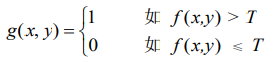
当T是一个适用于整个图像的常数时，称为全局阈值处理。当T在一幅图像上改变时，使用可变阈值处理这一术语
# 基本全局阈值处理
当物体和背景像素的灰度分布十分明显时，可以用适用于整个图像的单个（全局）阈值。
在大多数应用中，通常图像之间有较大变化，即使全局阈值是一 种合适的方法，也需要有能对每幅图像自动估计阈值的算法。
算法过程：(本质是k-means聚类，k=2)
为全局阈值T选择一个初始估计值
用单个阈值T分割该图像。这将产生两组像素：𝐺1由灰度值大于T的所有像素组成，𝐺2由所有小于等于T的像素组成
对𝐺1和𝐺2的像素分别计算平均灰度值（均值） 和
计算一个新的阈值：
重复步骤（2）到步骤（4），直到连续迭代中的T值间的差小于一个预定 义的参数∆𝑇为止
参数∆𝑇用于控制迭代的次数。通常， ∆𝑇越大，则算法执行的迭代次数少。图像的平均灰度对于T来说是较好的初始选择

# 最佳全局阈值处理
该方法在类间方差最大的情况下是最佳的；完全以在一幅图像的直方图上执行计算为基础。
算法过程：
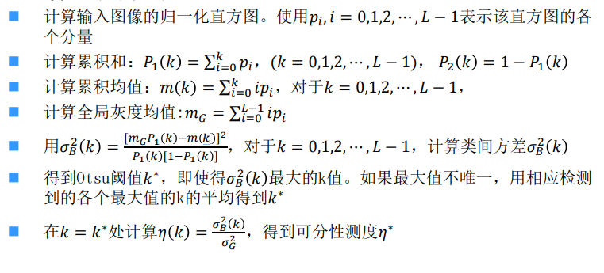
# 图像平滑改善全局阈值处理
噪声会将简单的阈值处理问题变为不可解决的问题。当噪声不能 在源头减少，并且阈值处理又是所选择的分割方法时，那么通常能增强性能的一种技术是，在阈值处理之前平滑图像。
例如：

如果直方图的波峰是高、窄、对称的，且被深波谷分开，则选取 一个“较好”阈值的机会相当大。改进直方图形状的一种方法是， 仅考虑那些位于或靠近物体和背景间的边缘的像素。
算法过程：
- 采用边缘检测，来计算一幅边缘图像，无论是梯度的幅度还是拉普拉斯的绝对值均可
- 指定一个阈值T
- 用步骤2中的阈值对步骤1中的图像进行阈值处理，产生一幅二值 图像 𝑔𝑇(𝑥, 𝑦) 。在从中选取对应于“强”边缘像素的下一步中， 该图像用做一幅模板图像
- 仅用 中对应于𝑔𝑇(𝑥, 𝑦)中像素值为1的位置的像素计算直方图
- 用步骤4中直方图全局地分割，例如使用Otsu方法
若将T设为小于边缘图像的最小值的任何值， 𝑔𝑇(𝑥, 𝑦)将由全1组成， 这意味着的所有像素将用于计算图像的直方图。习惯以百分比 的形式来指定T值，通常较高（90%），以便在计算中用梯度/拉普拉 斯图像中的较少像素。
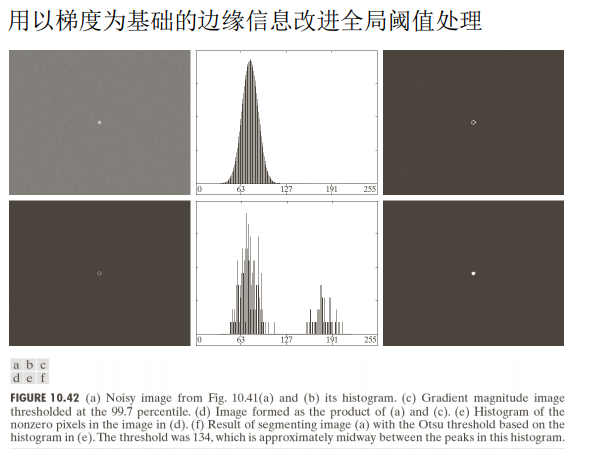 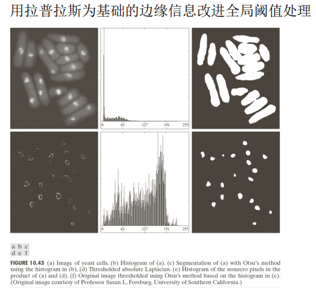# 基本自适应阈值
全局阈值存在一个问题，即不均匀亮度图像无法有效分割。处理办法是将图像进一步细分为子图像，并对不同的子图像使用不同的阈值处理。但是面临新问题是如何将图像进行细分和如何为得到的子图像估计阈值。
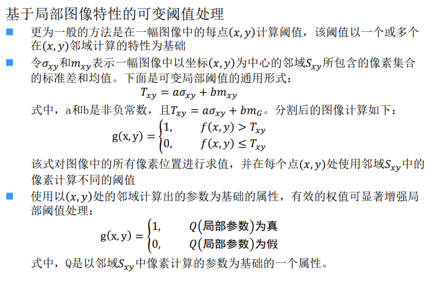 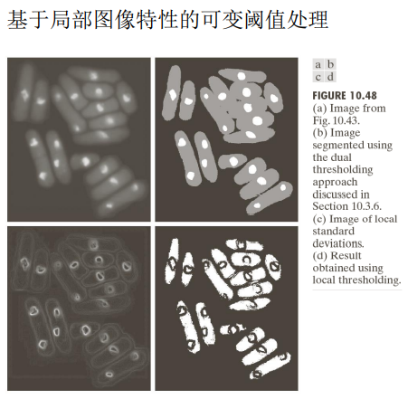 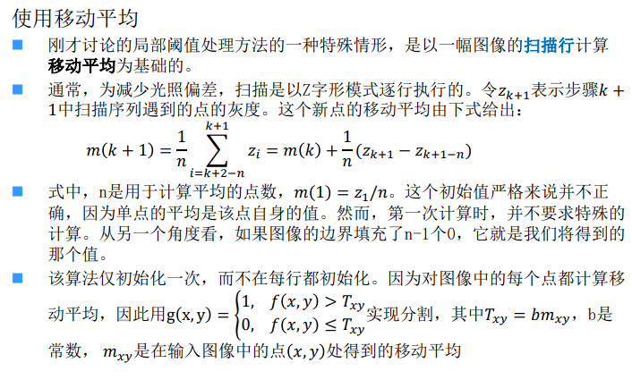 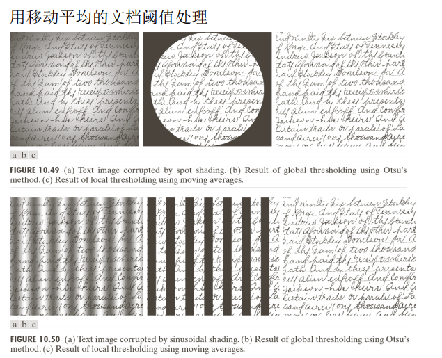# 基于区域的分割
区域生长的基本思想是将具有相似属性的像素集合起来构成区域。
具体先对每个需要分割的区域找一个种子像素作为生长的起始点，然后将种子像素周期邻域中与种子像素有相同或相似性质的像素合并到种子像素所在的区域。
将这些新像素当作新的种子像素继续进行上面的过程，直到再没有满足条件的像素。
# 区域生长

# 四叉树分解
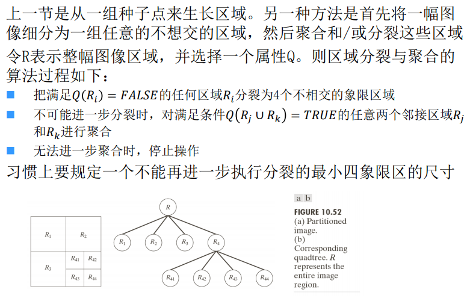# 用形态学分水岭的分割
分水岭也称分水线/水线，将图像看成三维地形表示。
基本思想：假设在每个区域的最小值上打一个洞，并且让水通过洞以均匀的速率上升，从 低到高淹没整个地形。当不同汇水盆地中上升的水聚集时，修建一个水坝来阻 止这种聚合。水将达到在水线上只能见到各个水坝的顶部的程度。这些大坝的 边界对应于分水岭的分割线

# 水坝构建